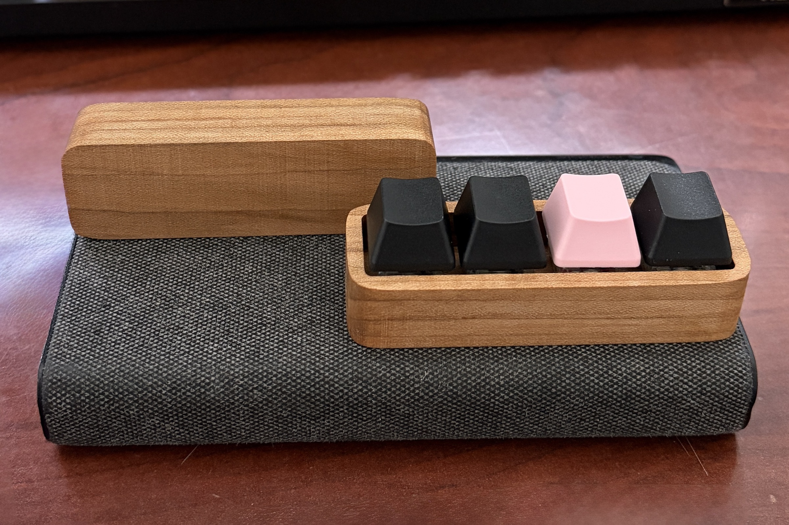
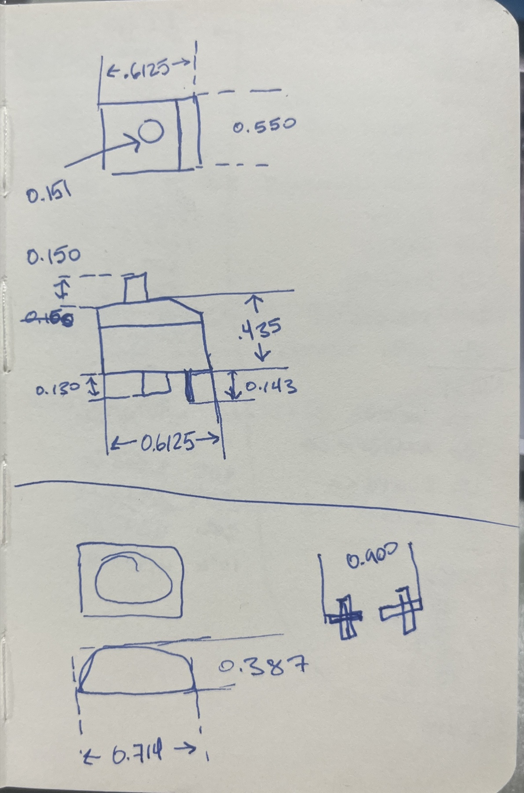
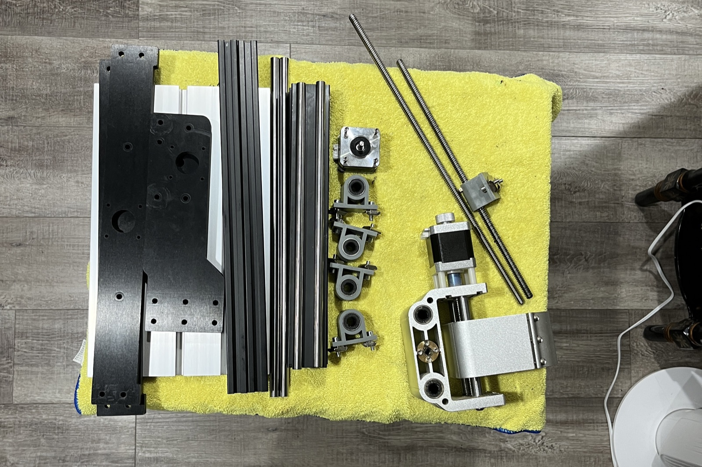
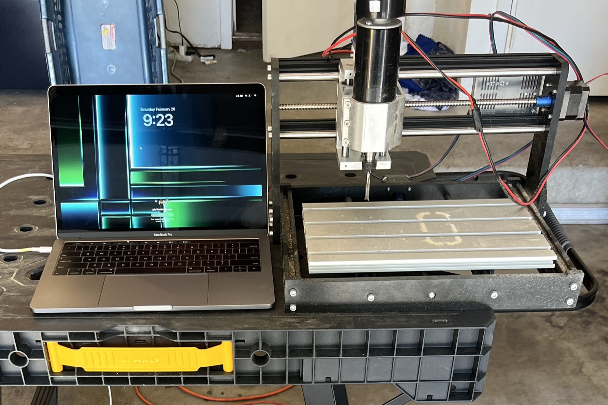
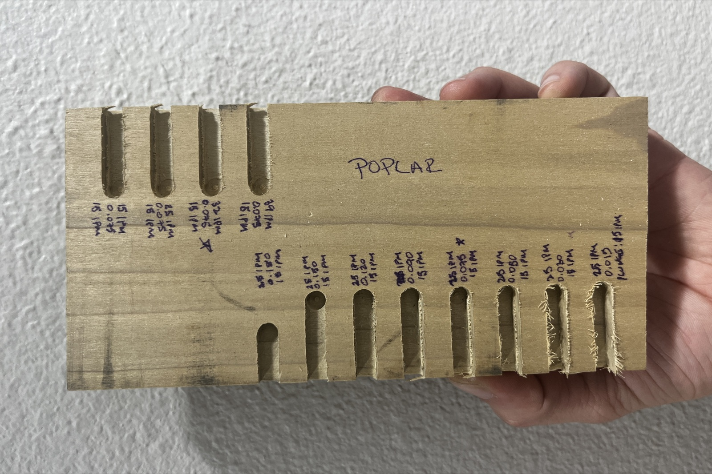
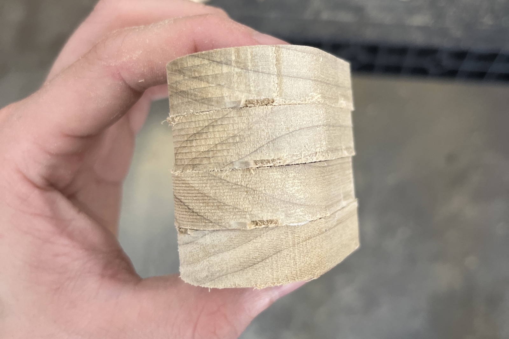
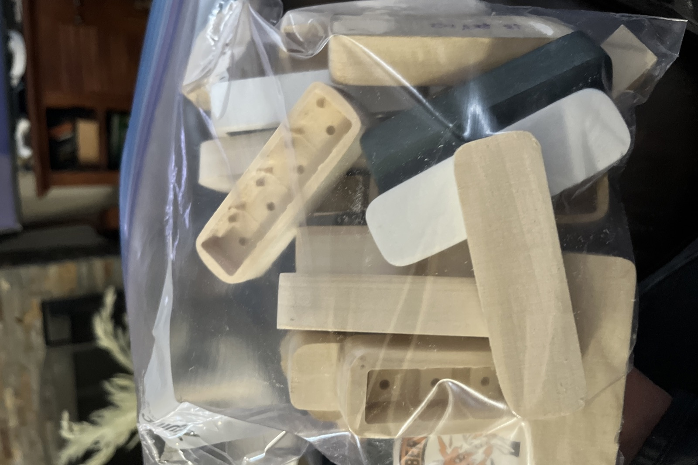
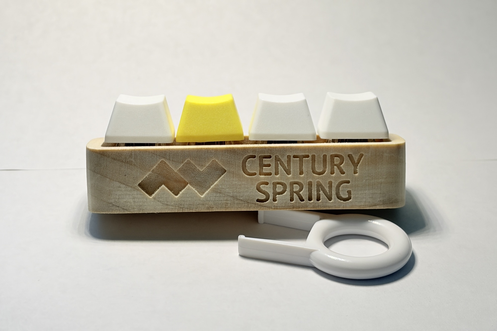

Fidget Clicker
A fidget toy, design journey.
Here's what makes this build stand out.
CNC-machined switch housing
Built around a real mechanical keyboard switch.
Satisfying tactile click
Every press feels precise.
Solid wood base
A stable, earthy foundation.
Compact desktop size
Small enough to fit in one hand.
Scroll to see more from the build.

Early sketches of the switch used to design the base.

It started with sourcing the hardware to build my own CNC router: linear rails, lead screws, and NEMA stepper motors.

Once assembled, the machine was ready to cut its first test pieces.
Before any machining, the raw stock gets jointed and planed flat and square.

Dialing in feeds and speeds on poplar test boards before committing to good stock.
Cutting a row of test slots to compare finish quality across different settings.
Roughing out the switch-housing pockets for a batch of five bodies at once.
A closer look at the roughing pass, clearing out the bulk of the pocket material.
The finishing pass leaves clean, square pocket walls ready for the switches.
Switching to a second CNC to cut a wider batch of bodies.
Fixturing a single body for a final profiling pass.

A glued-up laminated blank, ready to be milled down to its final shape.

A finished batch of bodies, bagged up and ready for finishing.
Hand-applying wood stain to bring out the grain before final assembly.

The finished clicker, engraved and assembled with keycaps and switches.
Reflections
Building the machine before I could build the product taught me more than the clicker itself. Every dimension in the sketches had to survive contact with real feeds-and-speeds tests, and a lot of them didn't. Running a second CNC in parallel and switching between roughing and finishing passes forced me to think about the process as a whole, not just the final part. Small things, like how a pocket is roughed before it's finished, ended up mattering as much as the design itself.